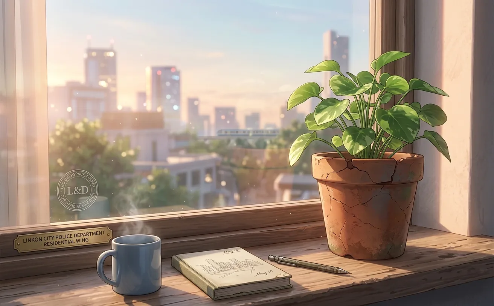
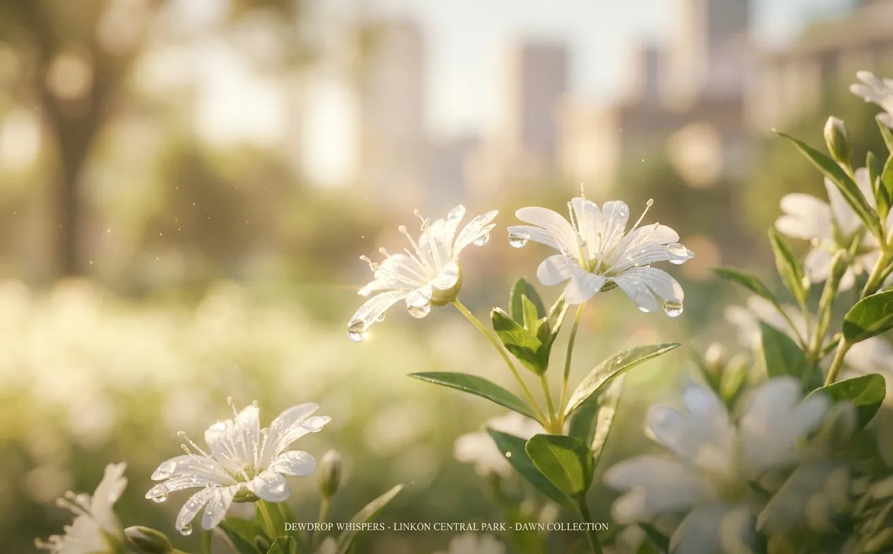
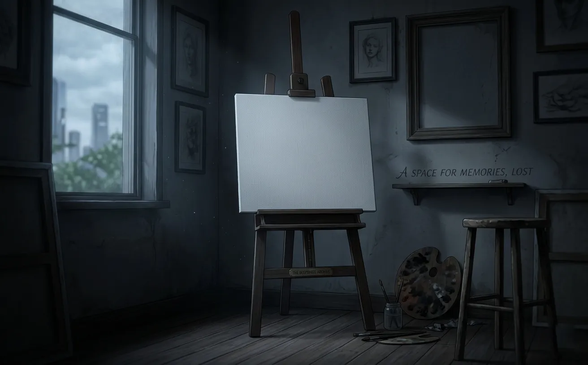
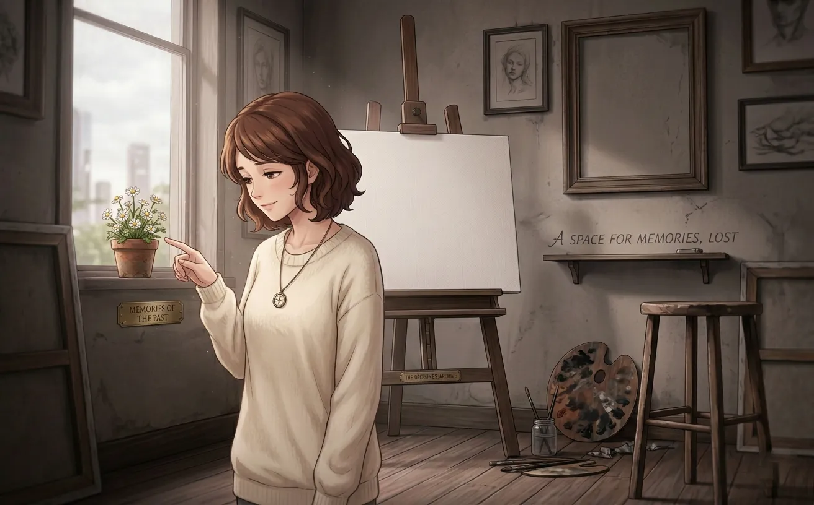
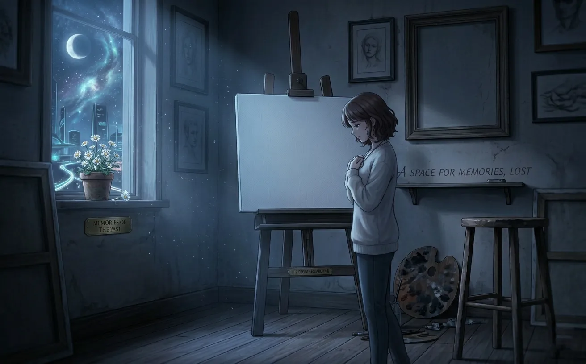
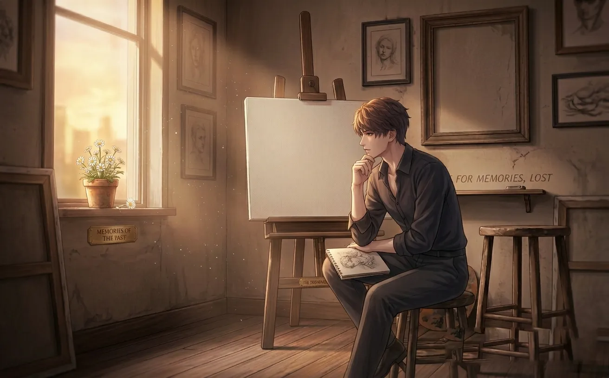
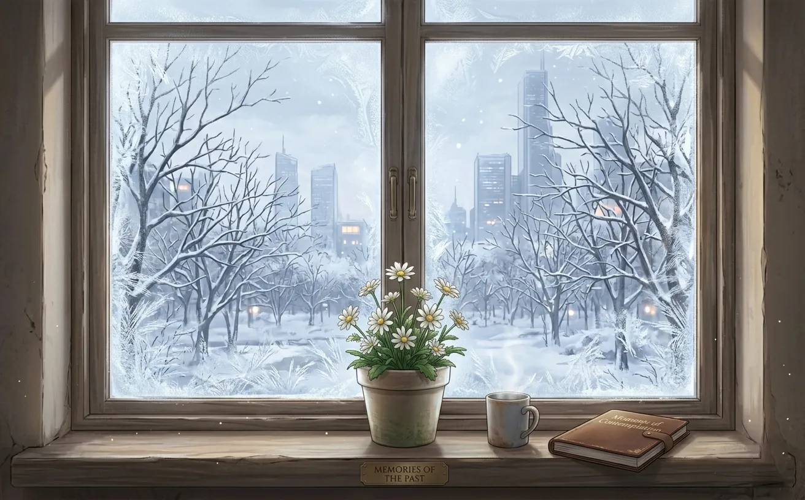
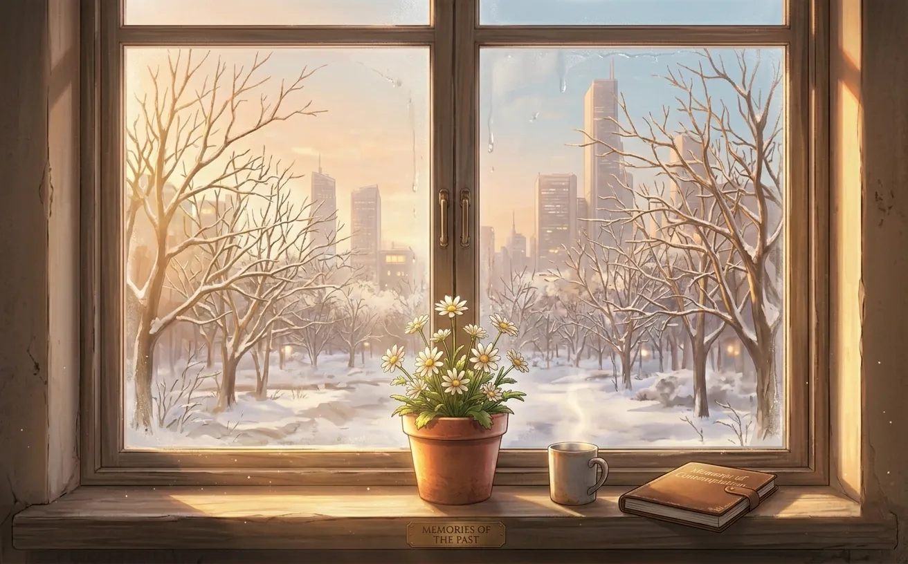

no one knows who put it there. no one waters it. but it keeps coming back.
there's a flower on rafayel's windowsill.
he doesn't know where it came from. it was there when he moved in. a small pot. terra cotta. cracked at the rim. and something green pushing through the soil.
he almost threw it away. he didn't.
that was years ago.

he was unpacking paint tubes. organizing brushes. trying to make the studio feel like his. the window faced the sea. he'd chosen the apartment for that reason.
the pot was on the sill. small. unremarkable. the soil looked dry.
"i should water that," he said. then he forgot.
days passed. weeks. the plant didn't die.
he noticed it again. the leaves were still green. still reaching toward the light. still alive.
"that's weird," he said.
he watered it. once. twice. then forgot again.
the plant didn't die.

it became a pattern. he would forget to water it. the plant would droop. he'd feel guilty. water it. it would perk up. bloom. then he'd forget again.
the flowers were small. white. delicate. they appeared at strange times. after a bad commission. after a fight with his gallery. after a night he couldn't sleep.
"maybe it's trying to tell me something," he said to no one.
it bloomed on the day he first saw her.
he didn't make the connection then. he didn't make the connection for a long time.

there was a bad week. the worst one yet.
his exhibition had been cancelled. a critic had written something cruel. he hadn't painted in days. the studio felt like a cage.
he stood by the window. looked at the flower. it was drooping again.
"what's the point," he said. not to the flower. to himself.
he reached for the pot. almost picked it up.
then he saw it. a tiny bud. not open yet. but there. hiding under a leaf.
he put his hand down. walked away.
the next morning, it was blooming.
he painted that day. just a small sketch. a flower on a windowsill. the first thing he'd painted in a week.

she came to the studio for the first time. looked around. looked at him. then looked at the window.
"what's that?"
"a flower."
"i can see that. why is it there?"
he shrugged. "it came with the apartment."
she walked to the window. touched a leaf. gentle. like it was fragile.
"it's been here the whole time?"
"i guess."
"you've been taking care of it?"
he almost laughed. "i forget to water it. it stays alive anyway."
she turned to look at him. "maybe it's waiting for someone."
he didn't know what to say to that.
she smiled. small. soft. "maybe it already found them."

she started coming to the studio regularly. not every day. but often. she brought food. she asked about his work. she sat on the floor and talked about nothing.
the flower bloomed more often.
he told himself it was a coincidence.
one night, she fell asleep on his couch. he was painting. not looking at her. definitely not looking at her.
the flower bloomed.
he looked at it. looked at her. looked back at the flower.
"ridiculous," he whispered.
the flower didn't care.
he painted until dawn. the flower stayed open. she stayed asleep. he didn't sleep at all.

"that flower."
she looked up from her book. "what about it?"
he hesitated. "it... blooms when you're here."
she looked at the flower. looked at him. "are you serious?"
"i don't know. maybe it's a coincidence."
she walked to the window. touched the petals. "it's beautiful."
"it's annoying."
"why?"
because it reminded him of her. because it bloomed when she was near. because it was doing something he couldn't.
he didn't say any of that.
"no reason," he said.
she looked at him. like she knew. like she always knew.
"you should water it more often."
then she smiled. and the flower kept blooming. and he kept pretending he wasn't in love with her.

she was gone for three months. work. far away. no visits. no texts. nothing.
the flower stopped blooming.
he watered it anyway. talked to it. (yes, he talked to it. don't tell anyone.)
"she's coming back," he said. "she always comes back."
the flower didn't respond. flowers don't talk.
but it didn't die either.
it held on. like him.
she came back on a tuesday. walked into the studio like she'd never left.
"i missed this place," she said.
the flower bloomed the next morning.
he didn't say anything. but he smiled. just a little.
he doesn't know where the flower came from.
he's looked it up. searched online. asked botanists. no one can identify it.
"it's not native to this region," one expert said. "i've never seen anything like it."
rafayel has a theory. he's never told anyone.
he thinks the flower came from the sea. from lemuria. from somewhere beneath the waves.
he thinks it's been waiting for him. longer than he knows.
he thinks it recognized her before he did.
he'll never tell her that. she'll think he's crazy.
maybe he is.
but the flower keeps blooming. and she keeps coming back.
and that's enough.

the flower is still on the windowsill.
the pot is still cracked. the leaves are still green. the flowers are still white.
she waters it now. sometimes. when she remembers.
(he waters it when she forgets.)
he's painted it a hundred times. maybe more. every time, it looks different. every time, it looks the same.
someone asked him once what it meant. why he kept painting the same flower.
"it's not the flower," he said. "it's what it represents."
"which is?"
he thought about it. "something that survived. even when no one was taking care of it."
the interviewer wrote it down. printed it. people read it. no one understood.
but she did.
she read the article. looked at him. said nothing.
the flower bloomed that night.
and rafayel, for once, didn't pretend he didn't notice.
the flower is still there. still alive. still blooming at strange times.
she asked him once if he'd ever name it.
"no," he said.
"why not?"
he looked at her. "it already has one."
she waited. he didn't say it.
but she knew.